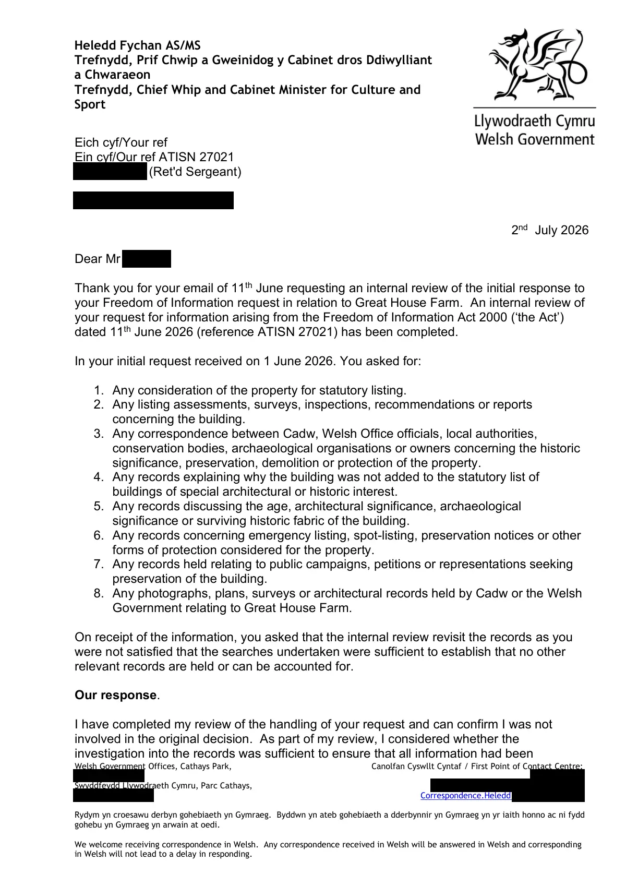

GHF-E106-R101-A1 complaint outcome
ATISN 27021 Review Ressponse.pdf

Transcript
Heledd Fychan AS/MS Trefnydd, Prif Chwip a Gweinidog y Cabinet dros Ddiwylliant a Chwaraeon Trefnydd, Chief Whip and Cabinet Minister for Culture and Sport Welsh Government Offices, Cathays Park, [address redacted] Swyddfeydd Llywodraeth Cymru, Parc Cathays, [address redacted] Canolfan Cyswllt Cyntaf / First Point of Contact Centre: [phone redacted] [email redacted] Correspondence.Heledd [email redacted] Rydym yn croesawu derbyn gohebiaeth yn Gymraeg. Byddwn yn ateb gohebiaeth a dderbynnir yn Gymraeg yn yr iaith honno ac ni fydd gohebu yn Gymraeg yn arwain at oedi. We welcome receiving correspondence in Welsh. Any correspondence received in Welsh will be answered in Welsh and corresponding in Welsh will not lead to a delay in responding. Eich cyf/Your ref Ein cyf/Our ref ATISN 27021 Requester [email redacted] 2nd July 2026 Dear Requester, Thank you for your email of 11th June requesting an internal review of the initial response to your Freedom of Information request in relation to Great House Farm. An internal review of
Read more
your request for information arising from the Freedom of Information Act 2000 (‘the Act’) dated 11th June 2026 (reference ATISN 27021) has been completed. In your initial request received on 1 June 2026. You asked for: 1. Any consideration of the property for statutory listing. 2. Any listing assessments, surveys, inspections, recommendations or reports concerning the building. 3. Any correspondence between Cadw, Welsh Office officials, local authorities, conservation bodies, archaeological organisations or owners concerning the historic significance, preservation, demolition or protection of the property. 4. Any records explaining why the building was not added to the statutory list of buildings of special architectural or historic interest. 5. Any records discussing the age, architectural significance, archaeological significance or surviving historic fabric of the building. 6. Any records concerning emergency listing, spot-listing, preservation notices or other forms of protection considered for the property. 7. Any records held relating to public campaigns, petitions or representations seeking preservation of the building. 8. Any photographs, plans, surveys or architectural records held by Cadw or the Welsh Government relating to Great House Farm. On receipt of the information, you asked that the internal review revisit the records as you were not satisfied that the searches undertaken were sufficient to establish that no other relevant records are held or can be accounted for. Our response. I have completed my review of the handling of your request and can confirm I was not involved in the original decision. As part of my review, I considered whether the investigation into the records was sufficient to ensure that all information had been disclosed. The officials involved work directly with Welsh Government’s record management system and I am satisfied that their knowledge of the system, together with the knowledge held in the records team, has allowed them to identify where any information we potentially hold would be stored. The initial release considered the following: • Physical registered file A--CL172-06-017/1 Community of Llandough – this file contained no information relating to your request. Officials used the Welsh Governments records as a basis of the search for the information that you requested. Three additional files were noted. Whilst officials were confident no further information was held in these files, following your request for a review, these files were requested to ensure a thorough and robust search. These are physical registered files focusing on general listing business, which include: • CL172-10-001/1 Buildings of Architectural / Historical interest requests for listing/delisting; • A--CL172-10-002/1 General enquiries/spot listing requests; and • A--CL172-10-001/1 Buildings of Special Architectural / Historical Int. Enquiries. Officials subsequently explained to the Records Department that the earliest papers held on file CL172-10-001/1 dated from 1997. As the information you requested would have dated from 1988 (or possibly earlier) officials requested a wider search of all files relating to spot- listing or listing/delisting from around 1980s-1990s. The search parameters included references for either Great House Farm, Great House, Ty Mawr or the spot-listing or listing/delisting files relating to properties within Vale of Glamorgan. This review identified six files of potential interest which have all been reviewed. I can confirm that none contained any information relating to the possible listing at Great House Farm, LLandough. The Records Department advised that with documentation dating back to 1988, it is possible that the file was destroyed before it was ever updated on our electronic filing system. There is also no evidence that any relevant files have been transferred to the RCAHMW. Following a thorough search of these files I confirm that we hold no further information relating to your request. Therefore, having undertaken a thorough review, I am content that you have received all the information we hold in relation to your request. Next steps I have considered your complaint in accordance with the procedure outlined in the Welsh Government's Practical Guide for Making Requests for Information which is available by post on request or via the internet at: Requesting information from the Welsh Government [HTML] | GOV.WALES If you remain dissatisfied with this response you have the right to complain to the Information Commissioner. The Information Commissioner can be contacted at: Information Commissioner’s Office, Wycliffe House, Water Lane, Wilmslow, Cheshire, [address redacted] Yours sincerely, Amy Longford Senior Inspector Historic Buildings Parks and Gardens Cadw
Artifact description
Provides the internal review outcome letter responding to the earlier review request.
| Catalogue ID | GHF-E106-R101-A1 |
|---|---|
| What it is | PDF document from Welsh Government / Cadw. Attached to an email received on 2 July 2026, their reference ATISN 27021. 3 pages. |
| From | Welsh Government / Cadw |
| Email received | 2 July 2026 |
| Their reference | ATISN 27021 |
| Pages | 3 |
| File | ATISN 27021 Review Ressponse.pdf (157 KB) |
| State | Read |
Our integration
Part of the FOI internal review thread with Welsh Government / Cadw opened 17 May 2026. The thread's standing classification is “partial”. Statutory time: met.
Concern to test: whether this reply answers the question as asked, or a narrower one. Not checked against the original request wording here.
Related: GHF-E106-R37-A1 — ATISN 27021 response letter · GHF-E106-R37-A2 — ATISN 27021 doc 1: farmhouse survey photo, 29 July 1988 · GHF-E106-R37-A3 — ATISN 27021 doc 2: barn survey photo, 29 July 1988 · GHF-E106-R95-A1 — GGAT assessment of Great House Farmhouse (filed August 1990) · GHF-E106-R97-A1 — Cadw survey photograph: barn, 29 July 1988 · GHF-E106-R98-A1 — Cadw survey photograph: farmhouse, 29 July 1988 · GHF-E106-R99-A1 — Internal Review Acknowledgement Letter.pdf · The covering email · What They Don’t Say: WTDS-5c5b715a-1, WTDS-5c5b715a-2, WTDS-5c5b715a-3, WTDS-5c5b715a-4 · EV-0489 in the evidence catalogue · Timeline · Disclosure Dartboard